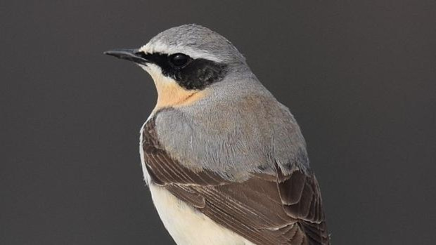
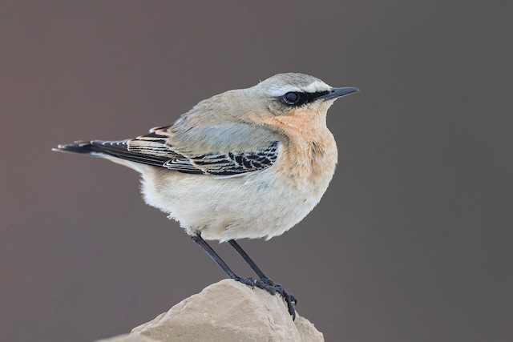

La collalba gris (Oenanthe oenanthe) es una ave paseriforme de la familia de los túrdidos, de apenas veinticinco gramos de peso y de aspecto elegante. Su nombre procede del griego ainos (vino) y anthos (flor), ya que regresa puntualmente a Grecia con la primavera, cuando las vides comienzan a florecer.
Es un ave fácil de distinguir gracias a su obispillo –la zona en la que nace la cola– que es de color blanco y que destaca sobre una 'T' invertida de coloración negruzca, perfectamente visible mientras vuela.
El dorso de los machos es de color gris azulado, sus alas son negras y su pecho ocre, a diferencia del plumaje de las hembras que es, generalmente, de color marrón grisáceo. Además de estas características anatómicas es fácil distinguir al macho de la hembra por lucir un antifaz negro con una ceja blanca.
Ahora bien, y aquí está la verdadera singularidad de esta ave, todas estas poblaciones tienen que emigrar hasta los cuarteles de invernada en África, en un cinturón geográfico subsahariano que se extiende desde Senegal hasta Kenia.
Así por ejemplo, un ejemplar que se cría en Alaska debe recorrer el estrecho de Bering, las estepas de Siberia y Mongolia, las tierras de Asia Menor, el desierto del Sáhara y acceder, tras una singladura próxima a los treinta mil kilómetros, a las sabanas de Sudán. La collalba gris es capaz de cruzar continentes, atravesar cordilleras y mares gracias a un complejo sistema GPS que se nutre de información que le llega de la posición solar, de las estrellas y del campo magnético terrestre.
